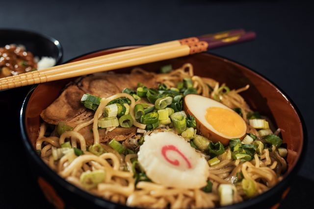

Ramen

Homemade Ramen Recipe
This comforting bowl of homemade ramen features a deeply savory, rich broth paired with springy noodles and
traditional toppings. The foundation of the dish is a slowly simmered stock—often a blend of chicken, pork, or
dashi—infused with aromatics like fresh ginger, garlic, and scallions. This broth is seasoned to taste with a
concentrated flavor base, or tare, made from soy sauce, mirin, and sake, creating a complex, umami-rich soup
that warms you from the inside out.
Nestled into the hot broth are tender ramen noodles cooked to a perfect chewy consistency. The bowl is
beautifully arranged with a variety of textures and colors, including a jammy, soy-marinated soft-boiled egg,
crisp sheets of nori seaweed, and finely sliced green onions. A final drizzle of toasted sesame oil or chili oil
floats on the surface, adding a fragrant finishing touch to this deeply satisfying, restaurant-quality noodle
soup.
Ingredients
- Chicken or pork stock (high-quality or low-sodium)
- Fresh ginger and garlic (crushed, to infuse the broth)
- Soy sauce, mirin, and sake (to create the savory tare flavor base)
- Dried shiitake mushrooms or kombu (optional, for extra umami depth)
- Ramen noodles (fresh or high-quality dried wavy noodles)
- Eggs (soft-boiled, ideally marinated in soy sauce and mirin)
- Cooked pork belly, chashu, or shredded chicken (your choice of protein)
- Scallions / Green onions (finely sliced)
- Nori sheets (dried seaweed, cut into small squares)
- Toasted sesame oil or chili oil (rayu) (for a fragrant drizzle)
Steps
- Infuse the broth: Combine your stock, crushed ginger, garlic, and optional shiitake mushrooms in a large pot. Bring it to a boil, then reduce the heat to low, cover, and let it simmer for 20–30 minutes to absorb the aromatic flavors.
- Make the flavor base (tare): In a small saucepan, combine the soy sauce, mirin, and sake. Simmer gently for 3–5 minutes until the alcohol cooks off and the flavors meld, then remove it from the heat.
- Prepare the toppings: Soft-boil your eggs by cooking them in boiling water for exactly 6 to 6.5 minutes, then plunge them into ice water, peel, and slice them in half. Slice your green onions and prep your chosen protein so everything is ready to assemble.
- Cook the noodles: Bring a separate pot of water to a rolling boil. Add your ramen noodles and cook according to the package instructions (usually 2–3 minutes for fresh noodles) until they are just tender and chewy. Drain them thoroughly.
- Build the soup base: Grab your serving bowls. Add 2 tablespoons of the tare flavor base to the bottom of each bowl, then ladle in about 1.5 to 2 cups of the piping hot, strained aromatic broth and stir gently to combine.
- Assemble and serve: Divide the cooked noodles evenly among the bowls, lifting them up to let the broth coat the strands. Arrange your protein, soft-boiled egg halves, green onions, and nori sheets elegantly on top. Finish with a drizzle of sesame or chili oil and eat immediately.
Home